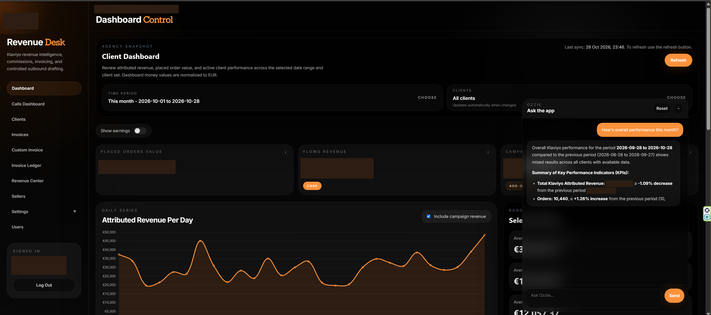

Revenue OS.
Billing built around client performance.
A marketing agency I worked for bills clients on performance, with different terms for each client. Standard billing systems couldn't handle that model, so I built Revenue OS.
It pulls performance data from Klaviyo, applies each client's billing terms, and generates invoices, performance reports, and email drafts ready to send.
Softphone data brings sales activity into the same workspace. Sellers can track their commissions, which also depend on each client's performance.
Ozzie, the built-in AI assistant, can answer questions using operational and financial data, help troubleshoot errors, and generate invoices.
Client results become the basis for billing and commission tracking, with reports and draft emails prepared in the same app.
Revenue OS + Ozzie
